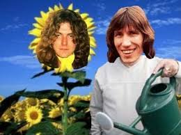
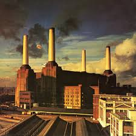
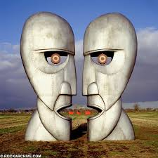
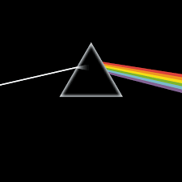
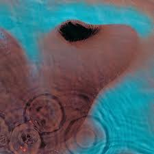
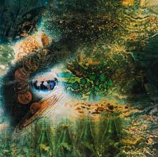
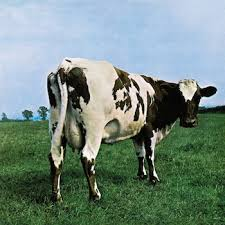

Roger Waters

Roger Waters is an English musician, songwriter, and co-founder of the legendary rock band Pink Floyd.
He became widely known as the bassist and one of the principal creative forces behind albums such as:
- The Dark Side of the Moon
- Wish You Were Here
- Animals
- The Wall
His artistic style often combines emotional storytelling, social commentary, and atmospheric sound design.
Album gallery







Roger Waters flowers.